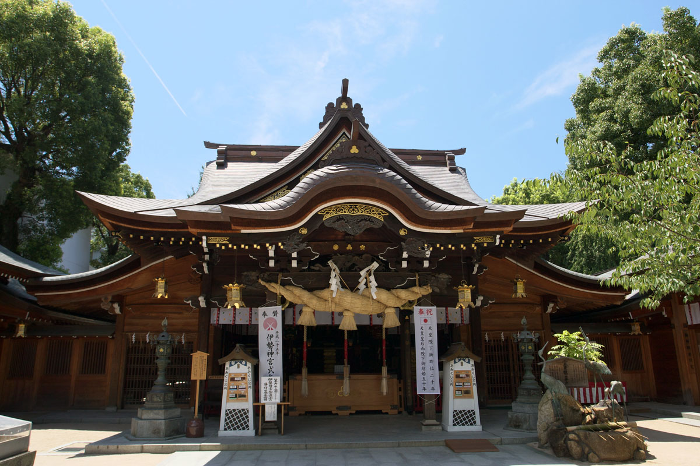
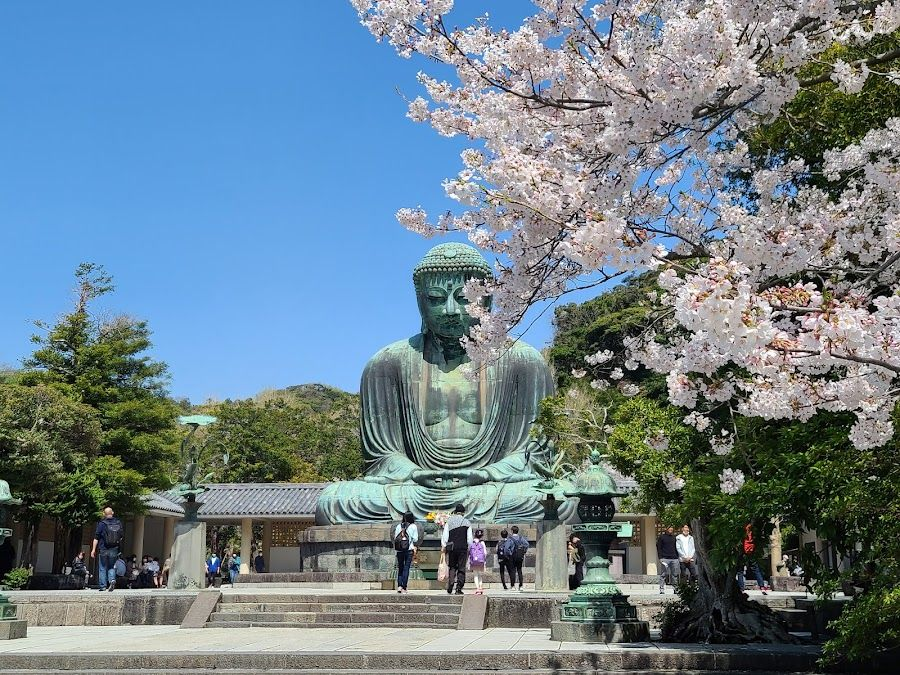

Религия в Японии — это сложный и многогранный феномен, где традиционные верования тесно переплетаются с заимствованными учениями, создавая уникальную синкретическую систему. Основу составляют две главные традиции — синтоизм и буддизм, однако влияние оказывают и другие учения, а также современные религиозные движения.
Синтоизм (дословно «путь богов») — исконная религия Японии, основанная на анимистических верованиях. Её суть — в поклонении ками — многочисленным божествам и душам умерших. Ками могут обитать в природных объектах (горах, реках, деревьях), а также в предметах и даже абстрактных понятиях. Почитание предков — ещё одна важная часть традиции.
Ключевые особенности: Нет сложной догматики и канонического священного писания. Главную роль играют ритуалы: молитвы (норито), подношения, обряды очищения (хараэ). Важную часть культа составляют мацури — праздники, которые стали неотъемлемой частью повседневной жизни и культуры. Святилища (дзиндзя) легко узнать по характерным воротам — тории.

Исторический контекст: Формирование синтоизма как системы верований началось в период Яёй (III век до н. э. — III век н. э.). Термин «синто» впервые зафиксирован в хронике «Нихон сёки» (720 год). Однако некоторые исследователи считают, что как независимая религия синтоизм сложился лишь в период реставрации Мэйдзи, а до этого развивался как ответвление буддизма.

Буддизм пришёл в Японию из Кореи и Китая в VI веке. Со временем он глубоко укоренился в японской культуре, предложив не только философские учения, но и развитую ритуальную практику.Особенности: В Японии сформировалось множество школ (Тэндай, Сингон, Дзэн, Чистой земли, Нитирэн), каждая со своим пониманием пути к спасению. Исторически сложилось синкретическое взаимодействие с синтоизмом. Например, возникла концепция хондзи-суйдзяку, где ками понимались как воплощённые будды. Иногда буддийские храмы строились рядом с синтоистскими.Буддизм восполнил в японской традиции отсутствие формализованной этики и представления о посмертной судьбе человека.
Христианство появилось в Японии в XVI веке с миссией Франциска Ксаверия. Однако в период сёгуната Токугава (1603–1868) оно было запрещено, и многие христиане ушли в подполье («какурэ-кириситан»). После снятия запрета религия продолжила существовать, но её последователи составляют меньшинство населения (около 1% или менее). Конфуцианство, хотя и оказало огромное влияние на японскую этику и социальные нормы, не является религией в строгом смысле.Даосизм не стал самостоятельной религией в Японии, но его элементы (астрология, гадания, учение об инь и ян) глубоко проникли в японскую культуру и мифологию.